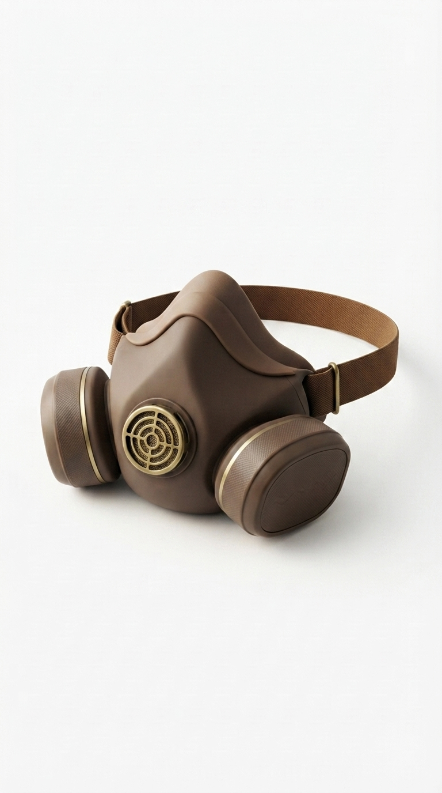
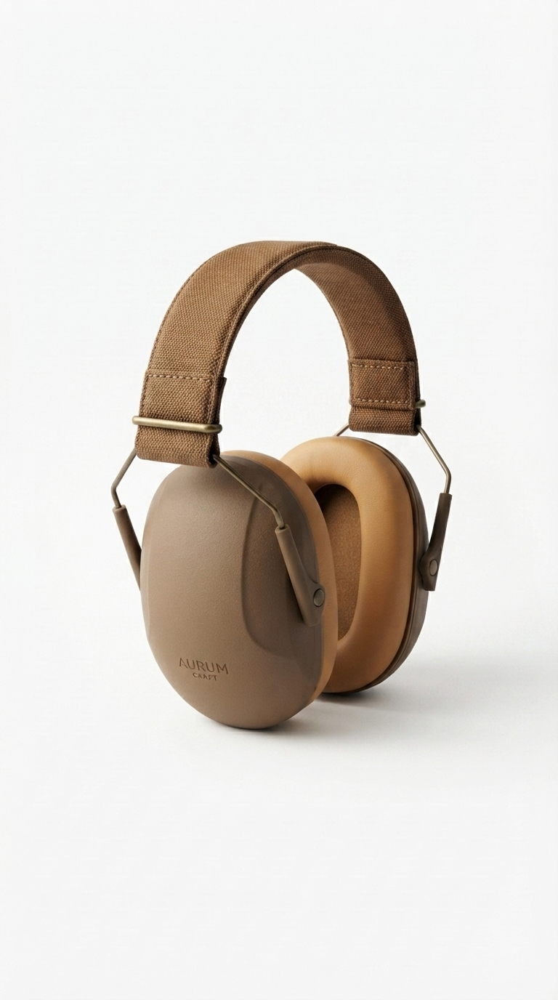
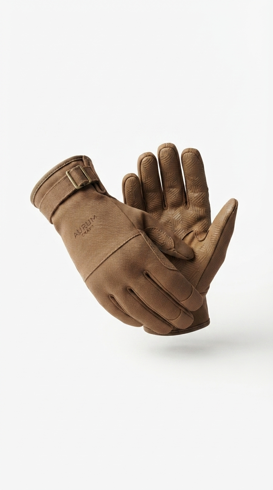
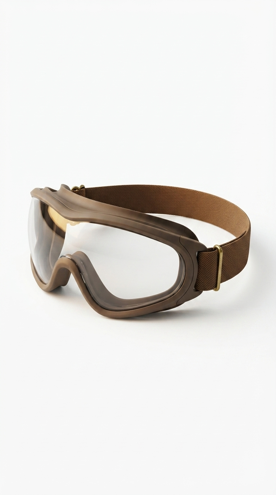

Modalidad
Clases presenciales
Aprendé a transformar una pieza existente en un mueble actual, funcional y con identidad propia.

Clases presenciales
5 encuentros
Lunes 18–21 hs
Avanzado
Este curso está pensado para quienes quieren ir más allá de la restauración básica. Vas a trabajar criterio estético, selección de materiales y color
Analizamos estructura, proporciones, estado general y posibilidades reales de rediseño.
Definimos paleta, materiales, textura y estilo para construir una dirección visual clara.
Aplicamos técnicas de restauración, color y protección para lograr una terminación profesional.
PROFESORES
Un equipo de profesionales con experiencia real en taller, diagnóstico y restauración de piezas.
ELEMENTOS

Protege las vías respiratorias del polvo y las partículas generados durante el trabajo.

Reducen el ruido de las herramientas eléctricas para trabajar con mayor comodidad y seguridad.

Protegen las manos de astillas, cortes y productos utilizados en el proceso de restauración.

Evitan que el polvo, las astillas y las partículas alcancen los ojos durante el trabajo.
Acompañamiento personalizado y seguimiento constante para que avances con seguridad.
Descubrí cómo fue la experiencia de quienes decidieron aprender
restauración y darle una nueva vida a cada pieza.